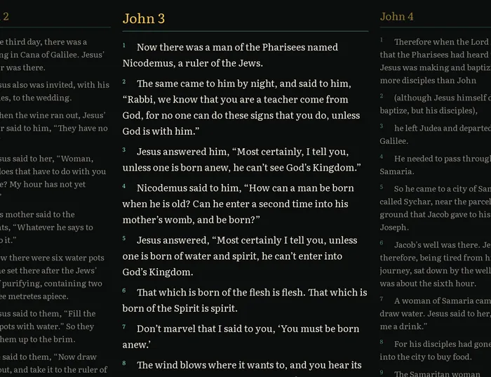
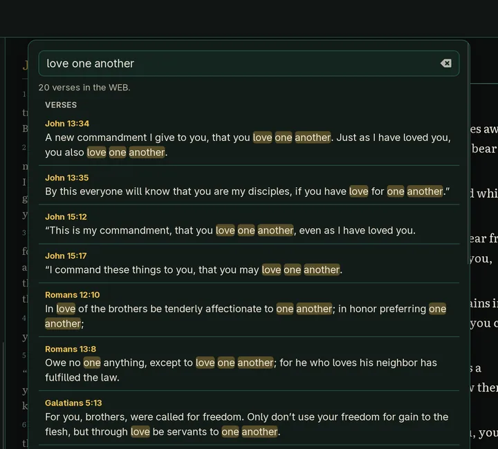
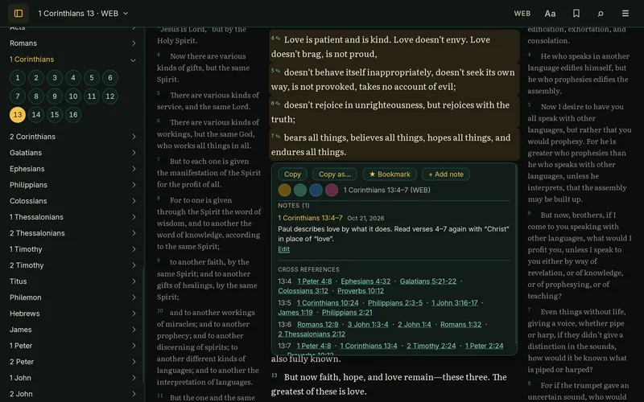
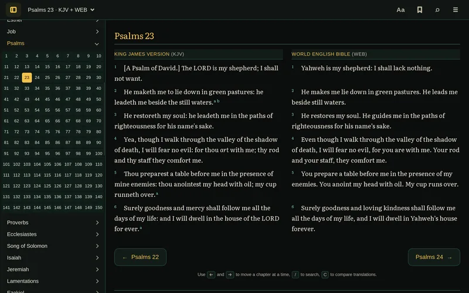

The main features
What Gospel Getter does, with the main keyboard shortcuts. In the app, Keyboard shortcuts in the menu lists them all.
Read in context

The chapter you’re reading sits in the middle, with the chapters before and after it faded on either side, as in the picture above. Press ← and → (or ‹ and › beside the reference) to turn chapters across the whole Bible, or use the buttons at the end of each chapter. The window’s title says where you are, and the window opens at the size and place you left it.
The reference at the top left, such as “John 3 · KJV”, always says where you are. Click it or press G to choose a book and chapter, or a random chapter, which opens at its top. On a wide window the books and chapters stay open in a sidebar you can hide. Back and Forward at the top (or Alt+← and Alt+→) go back and forward through the passages you jumped to, ▾ between them lists your recent places, and ? lists every keyboard shortcut.
Click a verse to see related passages in a card under it. Click one to read it in the card, the whole range if it’s a range. Go to opens it in the reader. The card floats over the text, so nothing moves. Each chapter’s Cross references, at its end, link straight to their passages. The cross-references come from OpenBible.info.
In the KJV, words the translators supplied are in italics, as in printed KJVs, and its margin notes are lettered footnotes. The BSB’s translators’ footnotes are lettered where the BSB places them. Select a verse to read its notes, or open a chapter’s Footnotes at its end.
Find a passage quickly

Press / or Ctrl+K and type a reference such as John 3:16, 1 Cor 13 or Psalm 23 to go straight there. Type a book’s name, like Psalms or 1 John, to go straight to its first chapter, with the verses that mention it listed below.
Type anything else to search the words of the text. You get every verse that contains all your words, in Bible order, with the words highlighted. Put words in quotes, like "love one another", to find an exact phrase. Search works offline too.
The same box runs commands, such as a theme or Compare, each shown with its key if it has one. Start with > to list commands only.
Keep what matters

- Copy with the reference. Click a verse, Shift-click another to select a range, then Copy in the card under them. If the card covers the verse you want, hold Shift and click through it. You get the text followed by its reference, such as “— 1 Corinthians 13:4–7 (WEB)”. Copy as… adds verse numbers, makes a Markdown quote, or copies the text alone, and Copy chapter… at the end of each chapter copies all of it.
- Bookmark passages. Bookmarked verses get a star, and the Library (the bookmark button at the top) opens any of them again.
- Highlight verses. Highlight the verses you’ve selected in yellow, green, blue or pink, like a highlighter pen. They show in whichever translation you’re reading.
- See all your highlights. The Highlights list in the Library shows every highlighted passage in Bible order, with its color and a preview. Filter by color, or click one to go back to it.
- Write notes. Select verses and choose + Add note to write about them. A small pencil marks verses with notes, selecting them shows the notes, and the Notes list in the Library has them all, in Bible order, with a box to search them. Notes take a little Markdown (bold, italics, lists and links), and a reference you type, like “Rom 5:8”, becomes a link that goes there. If the app quits or you close a note with Keep for later, what you typed is kept as a draft, on this computer only (backups don’t include drafts). Copy as Markdown copies a note with its verses quoted. Export notes… in the Library saves them as a Markdown file to read or print, or with One file per book (a folder) a file for each book, as notes apps such as Obsidian keep them, with each note’s verses quoted in the translation you’re reading, or as a Commentary of your notes by verse number, which you can also print. Choose the books, a chapter range for one book, and when the notes were written, and see how many notes match as you go. In reading mode your notes sit in the margin beside their verses; Notes in the margin under Aa turns that off.
- Back up or move your bookmarks. Export your bookmarks, highlights, notes, reading position and display settings to a file, and import them on another computer. You see what a file contains before anything changes. Bible text isn’t included.
- Pick up where you left off. The app reopens at the verse you were reading. Your chapter, translation, bookmarks, highlights, notes and settings are remembered.
Compare any two translations

Press C to put a second translation beside yours, one row per verse, as with the King James Version and the World English Bible here. Choose the other with the translation button at the top of the app (it shows the one you’re reading, such as KJV), beside Compare. Where only one translation numbers a verse, the other column says so instead of shifting anything. The last choice there, Notes, shows your own notes on the chapter beside the text instead, each next to its first verse; click one to select its verses and edit it.
Every text is stored exactly as its public-domain source provides it. The KJV’s source marks supplied words and margin notes in braces, and the app shows them as print does: the words in italics, the notes as footnotes. The BSB’s text and footnotes are Berean’s own, word for word.
Made for your computer
Gospel Getter is a desktop app, not a website. Once it’s installed, you don’t need the internet to read.
- Windows and Linux. Installers for 64-bit Windows, and an AppImage or
.debfor Linux. - Works offline. The King James Version, the Berean Standard Bible and the World English Bible are built in, along with the cross-references and search.
- No account. There’s nothing to sign up for or log in to.
- Your reading stays on your computer. Bookmarks, highlights, notes, reading position and settings are kept on your computer, in the app’s own data folder. The app only goes online to check for a new version, which you can turn off, and to download one you’ve chosen to install.
- A desktop app. It doesn’t open your browser or run a background server.
- Free and open source. The code is on GitHub under the MIT license.
Make it yours
Under Aa, at the top of the app, choose:
- Theme: nine of them.
- Text size: four sizes. The panels and menus grow with the text.
- Line spacing: three spacings.
- Width: three widths.
- Layout: the verses one to a line, or each chapter flowing as prose with small verse numbers.
- Reading mode: hides everything but the text.
Scripture is set in Literata, which comes with the app. The System theme follows your computer, Vellum when it’s light and Chi Rho when it’s dark. Printing is always black on white.

Chi Rho 
Vellum 
Classic Light 
Classic Dark 
Vaporwave 
Matrix 
Beast Slayer 
Hot Pink